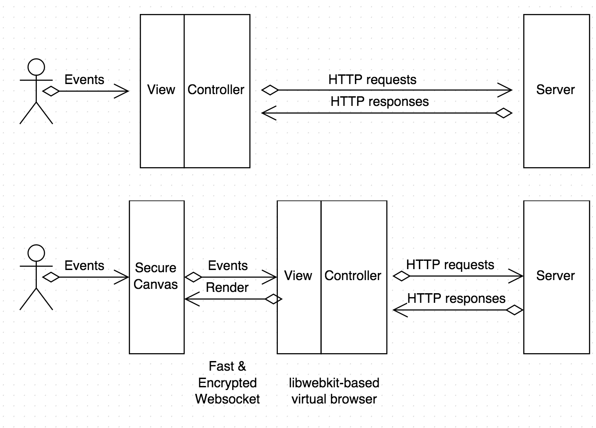
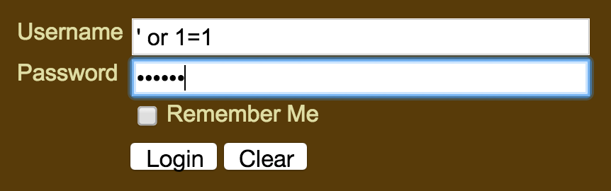
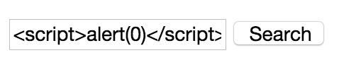

Quick intro: I'm Egor Homakov and my day job is security consulting at Sakurity.
What do vulnerabilities have in common?
To detect and stop malicious web attacks you need to look for a lot of different activities. The one thing all attacks have in common though is they all look different from what normal users send.
For example, users are not supposed to:
- Manually type URL. It should be changed by the app.
- Tamper HTTP headers and/or post body.
- Set User-Agent: () { :;}; /bin/bash -c "whoami"
- Read the source code.
- Change hidden inputs and other kinds of tampering.
No matter how often fancy promotional material says "machine learning", it will use a blacklist approach. Blacklists are known to be futile. Having to figure out ways to detect and block every action an attacker will perform is not effective. We need a new model.
We are going to create interface-based whitelist (what you see is all you can do). Users are supposed to type, scroll and click and this is the only thing SecureCanvas will allow them to do. This reduces the attack surface to absolute zero. Even the most vulnerable apps written by the most careless developer will become unhackable if its interface doesn't provide a way to hack it.
When the user requests http://example.com SecureCanvas loads the real example.com (which can only be accessed by SecureCanvas) in a virtual lightweight libwebkit-based browser. The user gets back a special syncronization page containing:
- A fullscreen <canvas> element. (Implementation #1 only)
- Javascript code creating a fast and encrypted websocket connection to SecureCanvas server. This works as a proxy for user events, gets back a Remote Frame Buffer (or HTML snapshots and diffs for Implementation #2).
- Text and links from the original example.com HTML snapshot. This is not visible to the user, but is useful for search engines and crawlers.
Implementation #1: Canvas and Remote Frame Buffer
Advantadges:
- Easy to get started with just Chrome in kiosk mode.
- You can even switch off copy/paste.
Disadvantadges:
- Unpleasant network latency. Typing feels slower.
- Fonts and images look compressed (see this screenshot)
- Problems with external widgets depending on cookies.
{kind=link}
Implementation #2: DOM snapshots instead of RFB
Instead of sending huge compressed PNGs over the wire it is easier to use HTML. SecureCanvas will get DOM diffs and patch current state in the user browser. virtual-dom and React.js by Facebook use a similar approach but for a very different purpose.
Advantadges:
- Website will look and feel the same.
- Responsive scrolling and typing.
- Widgets will keep working.
Implementation #3: Hot request whitelisting
For every page the user requests, SecureCanvas creates a virtual twin browser with this page in the cloud. JavaScript code is injected into the page to transmit and replay all user actions in the twin browser. So when your local page sends a request, your twin browser sends a similar request. Once SecureCanvas has two equal requests from both browsers it proves the request is the legitimate result of interaction with the app interface, and the request is proxied to the real example.com server.
Website's behavior remains exactly the same. No network latency and no problems with 3rd party requests.
URL Guard
To prevent URL tampering SecureCanvas will have flexible URL validation system with following security model choices:
- Only root is allowed — perfect for online banks and standalone apps where the user is not supposed to share, nor open, URLs with specific path.
- HMAC-signed URLs (by default). For example http://example.com/users?id=homakov will look like http://example.com/users?id=homakov/d9fx49d0189e1759 in the address bar. Without the signature SecureCanvas will not accept it. This will prevent all kinds of access bypasses — you cannot load /private_info/OTHER_USER_ID without a valid signature for that path.
- Known URLs only. Opening /some_url will be allowed only if the SecureCanvas server previously navigated to that address
- Any URL is allowed.
It will be possible to skip SecureCanvas for non-browser endpoints such as APIs.
OWASP Top 10 and other bugs SecureCanvas prevents:
- A1 Injections (prevents parameters tampering)
- A2 Broken Authentication and Session Management
- A3 XSS (prevents parameters tampering)
- A4 Insecure Direct Object References
- A5 Security Misconfiguration (partially)
- A6 Sensitive Data Exposure (partially)
- A7 Missing Function Level Access Control (interface-based access control. You can't do something you can't see and click on.)
- A8 Cross-Site Request Forgery
- A9 Using Components with Known Vulnerabilities (makes harder to exploit known vulnerabilities)
- A10 Unvalidated Redirects and Forwards
- Heartbleed (real https://example.com is unreachable)
- Shellshock (cannot tamper with headers)
- Rails Remote Code Execution (cannot manually set neither Content-Type nor post body)
- Mass assignment (you cannot add extra inputs nor edit hidden ones)
- Regular expression bypass for Ruby (you cannot replace an input with textarea)
- JSONP or RJS leakings (URL Guard will not accept internal URL)
- Clickjacking / UI redressing (synchronization page has X-Frame-Options:DENY)
- OAuth vulnerabilities
- Everything else you can think of!
- Race conditions. You will be able to limit requests per seconds per UserID but some kinds of race conditions can be performed from different accounts, such as redeeming a voucher.
- DDoS. It might have anti-DDoS protection built-in but the nature of DDoS makes it impossible to prevent completely.
- Bots. Nobody can stop bots. The best you can do is to make the attack a little bit more expensive for them using hashcash or CAPTCHA. Everything else "that stops bots" is snake oil.
- Bruteforce.
- XSS and SQL injections via text inputs. There will be an option to disallow typing <>"'.  
Solutions
There will be an Enterprise edition to install on premises for banks and companies with strict security policies. For everyone else there will be PaaS.
Fundraising
There's no prototype yet. We're looking for investors to speed this up.